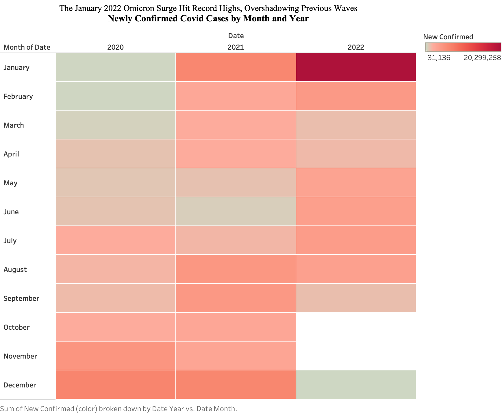

Reading & Critique

The chart shows new COVID cases in the US starting in 2020 and going through early 2022 using a 7 day average. The biggest spike in the whole thing is in January 2022 which happened because of the Omicron variant surge. The spiral shape is meant to show time in order where the middle starts in 2020 and it keeps growing until the 2022 surge at the very end.
I like how the original NYT spiral is super engaging and grabs your attention because it looks so different. It basically lets you browse the data and find patterns in the pandemic waves. But I really think it could have used better ways to show the actual numbers. It shows the case counts using area which humans usually underestimate compared to just looking at length or where something is positioned. Plus because it does not have a straight baseline it is really hard to compare the winter surge in 2020 with the huge Omicron surge in 2022.
If we redesigned it with a common scale or lined things up better it would be way easier to see that the 2022 peak hit about 1.4 million cases. That would turn it from a cool looking picture into a tool that actually helps you understand the differences in the data.
Visualization Sketches

Figure 1 is a regular line chart that cares more about being accurate than looking new. I wanted to move the data from thickness to position because that is the best way for people to understand numbers. The goal was a clear timeline that shows the Omicron peak as a huge vertical outlier. It works for comparing numbers but you lose that circular seasonal feeling the NYT wanted.

Figure 2 is a matrix heatmap to look at trends by month and year. The plan was to keep the seasonal comparison but use color instead of area. It lets you line up months like January across different years so you can see how the surges compare. It makes the seasons clear but you might lose some of the day to day changes if you group it too broadly.

Figure 3 is a bar chart focused on month-over-month change in COVID cases. I used length because it is better than area for showing specific numeric differences. The goal was to reduce timeline noise and highlight when cases were accelerating or slowing down. It is useful for change detection, but it downplays total burden and breaks some of the continuous story of how the virus spread over time.
Final Visualization Design

Final Writeup
My final design shows how massive the early 2022 surge was while still focusing on seasonal comparison. I chose a heatmap to fix the alignment issue in the spiral. By placing months and years on a shared grid, I can compare winter waves directly across years. I used color intensity to encode magnitude, and the January 2022 cell stands out as the maximum monthly total (about 20.3 million newly confirmed cases in the transformed table). I aggregated daily data into monthly sums to reduce reporting noise and make the seasonal pattern easier to read.
This redesign addresses my original critique because it makes cross-year comparison much clearer than the spiral. Moving away from area thickness improved magnitude readability, but there are tradeoffs. The heatmap is less continuous as a timeline, exact values are less immediate than in a line chart, and it is probably less visually dramatic than the original NYT spiral. Overall, the redesign is stronger for comparison and interpretation, even if it is less narrative and less attention-grabbing.